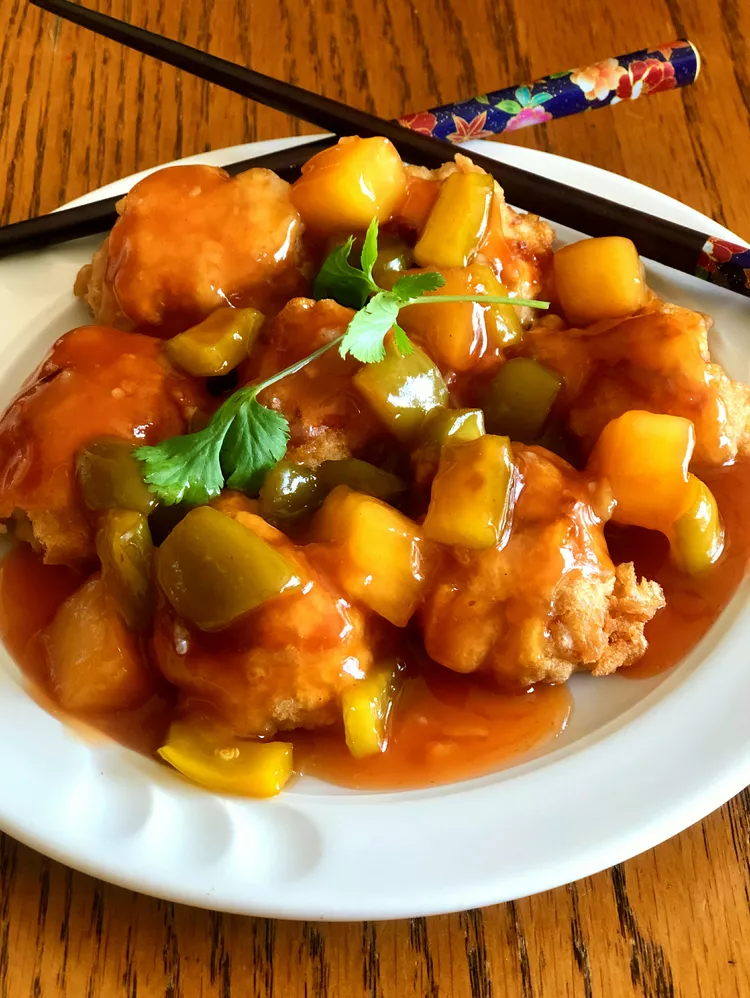

Sweet and Sour Chicken

Description
Tangy sweet and sour chicken with a kick of orange flavor.
Ingredients
-
1 cup ice water
-
1 egg
-
¼ teaspoon baking soda
-
¼ teaspoon salt
-
2 cups all-purpose flour, divided
-
4 skinless, boneless chicken breasts, cut into cubes
-
vegetable oil for frying
Preparing the sauce
-
4 tablespoons cornstarch
-
3 tablespoons water
-
1 cup white sugar
-
½ cup ketchup
-
½ cup white vinegar
-
½ cup water
-
½ cup orange marmalade
-
2 tablespoons pineapple juice
-
2 teaspoons soy sauce
-
1 ½ teaspoons minced fresh ginger root
-
1 teaspoon minced garlic
-
¼ teaspoon red pepper flakes
-
½ cup chopped fresh pineapple (Optional)
Steps
-
Beat ice water and egg together in a bowl using a whisk or a fork. Add baking soda and salt and mix to combine. Add 1 cup flour to water mixture; mix until blended but lumpy.
-
Place remaining 1 cup flour in a separate bowl. Cover each piece of chicken in flour, then move to egg mixture and cover, letting excess batter drip off.
-
Heat vegetable oil in a wok or large, deep frying pan over medium heat until a drop of water crackles when placed into oil.
-
Place chicken into the hot oil and fry, flipping if needed, until no longer pink in the center and golden brown, 3 to 4 minutes. Set aside and keep warm.
-
Combine cornstarch and 3 tablespoons water in a small bowl.
-
Combine sugar, ketchup, vinegar, 1/2 cup water, orange marmalade, pineapple, pineapple juice, soy sauce, ginger, garlic, and red pepper flakes in a medium saucepan. Bring to a boil; add cornstarch mixture. Reduce heat and let simmer, stirring frequently, until desired thickness is reached.
-
Pour sauce over chicken and serve.